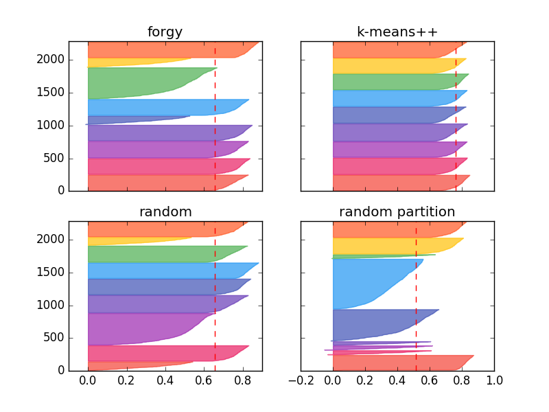

Akademia Górniczo-Hutnicza
Wydział Informatyki, Elektroniki i Telekomunikacji

Łukasz Strzałka
Laboratorium 4 zad 1 - Metody inicjalizacji k-means
Dane
Liczby
Liczba Iteracji: 1000
Liczba Klastrów: 9
Liczba Punktów z obrazka: 2188
Metryka: Davies-Bouldin index
Zbiory
Rezultaty poszczególnych metod
Random
Random Partition
Forgy
K-Means ++
Jakość Klasteryzacji
Random
Średnia: 144.09230755267691
Błąd: 2.8421709430404007e-14
Random Partition
Średnia: 1.4210854715202004e-14
Błąd: 101.43592538041614
Forgy
Średnia: 44.941775627308211
Błąd: 65.564970595124208
K-Means++
Średnia: 7.6527794691607251e-15
Błąd: 36.333607657358641
Wykres
Jakość Klasteryzacji Silhouette
Wykres

Wnioski
Przede wszystkim możemy zauważyć, że najgorszej jakości klastry dają metodt Random i Random Partition. Może to być związane z tym że nie są to metody wbudowane w bibliotekę z której korzystałem.
Ale są to także najmniej zaawansowane metody. Forgy i K-means ++ dają najlepsze wyniki klasteryzaji. Potwierdzenie tych wyników znajduje się w wynikach i na wykresie je prezentującym zastosowanej miary jakości klasteryzaji Davies-Bouldin index.
Metoda Forgy charakteryzuje się dużym marginesem błędu. W metryce Silhouette możemy zaobserwować że K-means ++ daje nam najrówniejsze rozłożenie punktów po klastrach, Forgy też wygłąda nieźle, podczas testów zdarzało się że jego wykres wyglądał tak jak K-means++.
Przechodząc do naszych maruderów, Random nie wygląda tak źle, ale Random Partition nie zachwyca wynikami. Podsumowywując K-means ++ daje najrówniejsze i najlepsze rezultaty, Forgy daje niezłe rezultaty, ale ma duży margines błędu, jest bardzo niestabilny, potrafi wznieść się na wyżynyn a zaraz potem pogrążyć.
Random i Random Partition nieprzypadkowo dają najgorsze wyniki. Wygląda na to że Random i Random Partition utknęły w minimum loklaknym.